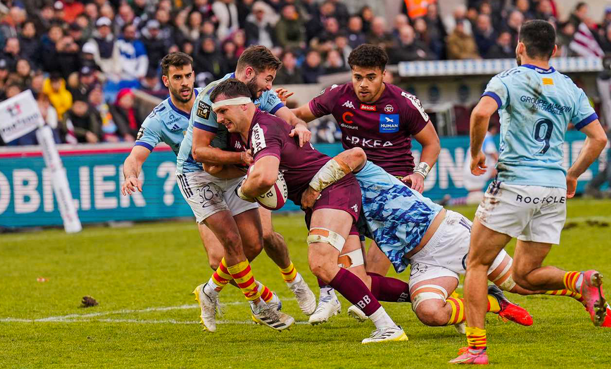
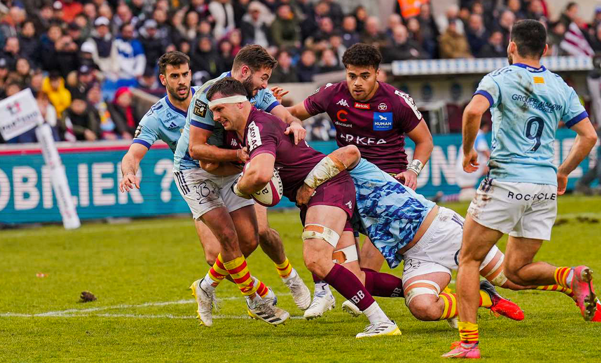

Même si cette saison ils sont dans le "ventre mou" du TOP14, n'oublions pas qu'ils sont allés en finale la saison passée.
C'est après la sirène que les racingmen inscrivent l'essai de leur victoire. Menés sur toute le rencontre, les joueurs de Patrice Collazo se rebellent une nouvelle fois pour leur première délocalisation de la saison à Lens. À la manière du Derby Parisien, ils surprennent et refont apparition dans le Top 6, laissant les Bordeaux-&-Blanc à la 7e place.
 


Venez tous